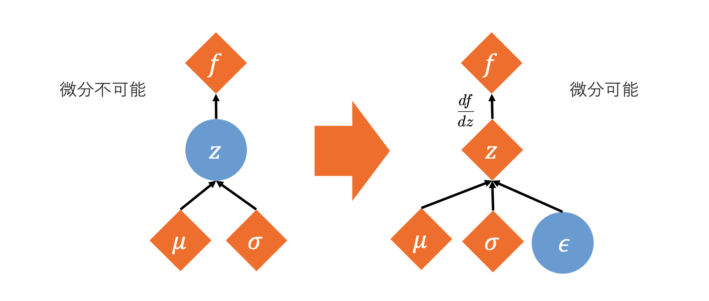

リパラメタライゼーショントリック(Reparameterization trick)
確率分布からサンプリングされた変数は確率変数となるため微分ができず， 逆誤差伝搬による計算を行うことができない． この問題を解決するため、Kingmaらが導入した手法がリパラメタライゼーショントリックである．
リパラメタライゼーショントリックでは特定の確率分布からのサンプリングをパラメータ非依存の乱数と その確率分布のパラメータに分割・合成することで同等のサンプリングを行う． 例えば，$z$が平均$\mu$，分散$\sigma$をパラメータとして持つ正規分布$\mathcal{N}$からサンプリングされるとする．
$$z \sim \mathcal{N}(\mu, \sigma^2)$$
ランダムノイズ$\epsilon$を用いて以下のように変換する．
$$z = \mu + \sigma \odot \epsilon$$
$$\epsilon \sim \mathcal{N}(0,1) $$
これにより$z$は，$\mu$と$\sigma$に対して確定的な値となるため微分可能になる．

Pytorchでのリパラメタライゼーショントリックを用いたサンプリング
m = Normal(*params)
z = m.rsample()
リパラメタライゼーショントリックを用いたサンプリングができるできる確率分布は以下の値がTrueとなっている．
m.has_rsample
参考
Tags: